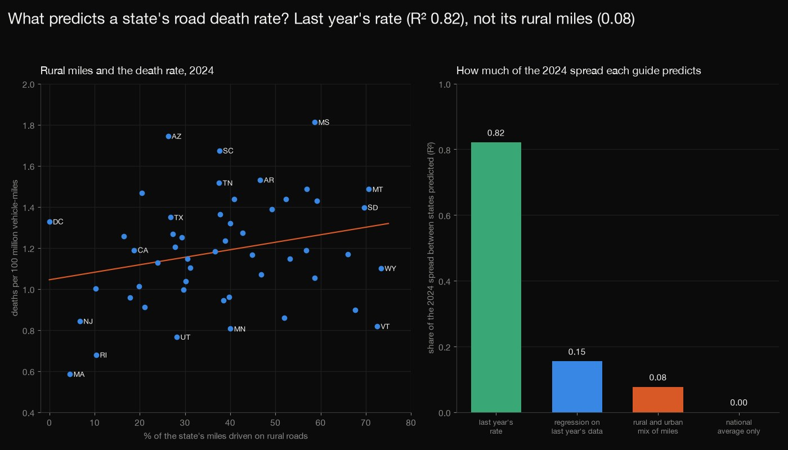
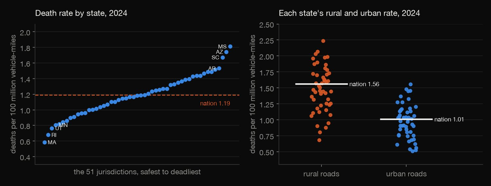
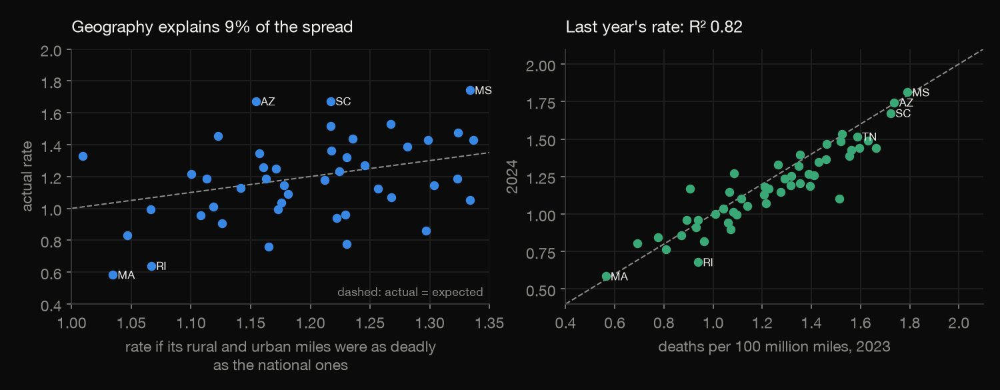
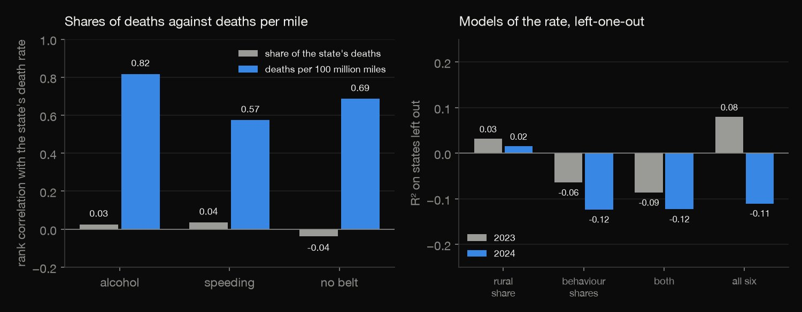
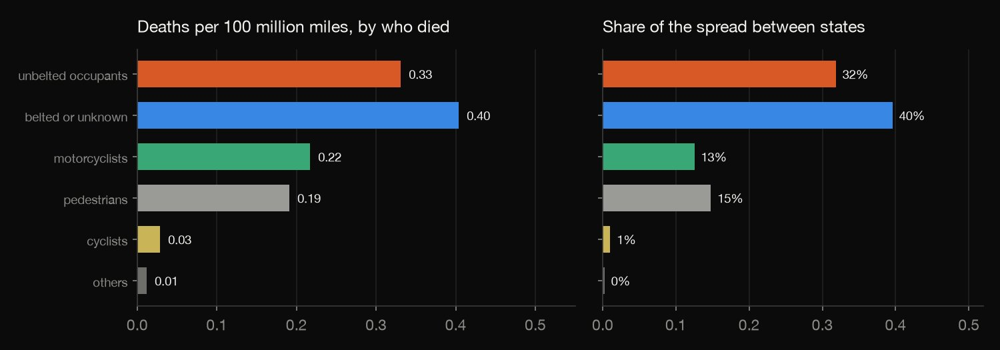
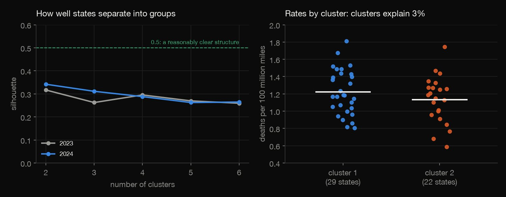

Python · Regression & clustering · 2026-10
What Makes Some States Deadlier to Drive In?
In 2024 the deadliest state was 3.1 times as deadly per mile as the safest, but the rural-urban mix of its miles explains only 9% of that spread, shares of deaths from drink, speed or no belt explain none of it out of sample, and last year's rate explains 82%.

Associations between 51 states in two years, not causes and not risks to a driver; deaths are per mile driven, not per resident. FHWA's rural minor-collector and local miles are state estimates and Tennessee changed its method in 2024 (checked with and without it). The alcohol measure uses NHTSA's imputation table, read without the manual. Only state totals and rates are published, no crash or person records. Sources: NHTSA Fatality Analysis Reporting System 2023 and 2024; FHWA Highway Statistics table VM-2 (US federal government data).
01 — The problem
Road deaths per mile driven differ enormously between states, and the standard explanations are the rural share of the roads and the behaviour of the drivers who die. What really separates the deadly states from the safe ones, and does anything we can measure predict it?
The task follows DataCamp's "Reducing Traffic Mortality in the USA" (regression and clustering of state crash data). The list gives the method, not the data, so this page uses the federal records themselves: every fatal crash in 2023 and 2024 (NHTSA FARS) against the miles driven in each state (FHWA VM-2).
02 — What I built
Two years of the federal census of road deaths, set against the miles driven, and put through five tests:
- The audit: the crash and person tables, the 51 jurisdictions, the mileage totals, and Tennessee's change of method.
- Geography: the rate each state would have if its rural and urban miles were as deadly as the national ones.
- The usual suspects: shares of deaths from drink, speed and no belt, in regressions scored by leave-one-out R², and as per-mile rates.
- Who dies: the spread between states split by kind of death, and k-means groups of states.
- Check:
check.pyrecounts all 3,488 numbers in plain Python, with no data or statistics library.
03 — How it was built
- 01
Download the deaths and the miles
NHTSA's FARS national CSV files for 2023 and 2024 (every crash on a public road with a death within 30 days) and FHWA's table VM-2, vehicle-miles by state, rural and urban. About 67 MB, so they are fetched, never committed, with their checksums. Both are US federal government data.
FILES = {f"FARS{y}NationalCSV.zip": f"https://static.nhtsa.gov/nhtsa/downloads/FARS/{y}/National/FARS{y}NationalCSV.zip" for y in (2023, 2024)} - 02
Price the geography
National rural and urban death rates are applied to each state's rural and urban miles to get the rate it would have if its roads were as deadly as the national ones; the ratio of its actual rate to that is its excess. The audit first checks that the states add up to FHWA's U.S. Total and the road classes to each state's total.
S.loc[S["year"] == y, "expected_rate"] = (rr * g["rural_vmt_millions"] / 100 + ur * g["urban_vmt_millions"] / 100) / (g["vmt_millions"] / 100) - 03
Score every model on states it has not seen
The log death rate is regressed on the rural share of miles and on the shares of deaths from drink, speed and no belt, and each model is scored by leave-one-out R-squared, computed exactly from the hat matrix, so a model must predict a state it was not fitted on.
return 1 - float(np.sum((e / (1 - h)) ** 2) / np.sum((n / (n - 1) * (y - y.mean())) ** 2)), beta, inv, e - 04
Ask who dies, and who clusters
The spread of the death rate between states is split by who died (an accounting split of the covariance), and k-means groups states by the rural share of their miles and the shares of deaths that are unbelted occupants, motorcyclists and other road users, with k chosen by silhouette and the partition's stability checked across seeds and years.
km = KMeans(n_clusters=k, n_init=100, random_state=0).fit(Z); lab = relabel(km.labels_, fips); cby[(y, k)] = lab - 05
Recount it all from the files
check.pyrebuilds the state table from the zipped CSV files in plain Python and recomputes the geography, the correlations, every regression (normal equations solved by hand), the splits, the out-of-year predictions and, for every stored k-means partition, that it is a fixed point of Lloyd's algorithm, its silhouette and its adjusted Rand index: 3,488 numbers.assert min(dd, key=dd.get) == lab[i], ("not a k-means fixed point", y, k, G[y][i]["state"])
04 — Results
The data. 36,297 fatal crashes and 39,254 deaths in 2024 (41,025 in 2023) on 3,294 billion vehicle-miles: 1.19 deaths per 100 million miles (1.26 in 2023). The crash table and the person table agree on the deaths, the 51 jurisdictions' miles add up to FHWA's U.S. Total, and 343 deaths (0.9%) have no rural or urban code.
A threefold gap. Mississippi had 1.81 deaths per 100 million miles in 2024 and Massachusetts 0.59: 3.1 times as many, with 23 of the 51 above the national rate. The table shows the five deadliest and the five safest: Rural is the share of the state's miles on rural roads, and Excess is its death rate divided by the rate its rural and urban miles would give at the national rural and urban rates.
| State | Rate | Rural | Excess |
|---|---|---|---|
| Mississippi | 1.81 | 59% | 1.31 |
| Arizona | 1.74 | 26% | 1.45 |
| South Carolina | 1.67 | 38% | 1.37 |
| Arkansas | 1.53 | 47% | 1.21 |
| Tennessee | 1.52 | 38% | 1.25 |
| Vermont | 0.82 | 73% | 0.57 |
| Minnesota | 0.81 | 40% | 0.63 |
| Utah | 0.77 | 28% | 0.65 |
| Rhode Island | 0.68 | 10% | 0.60 |
| Massachusetts | 0.59 | 5% | 0.56 |

Rural roads are deadlier, and that explains little. Per mile, rural roads kill 1.55 times as often as urban ones (1.56 against 1.01). A state's rural-urban mix of miles, priced at those national rates, explains only 9% of the spread of the log death rate between states in 2024 (9% in 2023; rank correlation 0.23). Rural and urban rates vary widely between states within each road type, as the right chart above shows.

Shares of deaths do not track the rate. The rank correlation of a state's death rate with the share of its deaths in speeding-related crashes is 0.04, with alcohol-impaired-driver crashes 0.03 and with unbelted occupants -0.04. Per 100 million miles the same three correlate at 0.57, 0.82 and 0.69, partly by construction (those deaths are part of the total). A share measures the mix of deaths, not the danger per mile.

The models fail out of sample. The table is the leave-one-out R-squared of the log death rate on the rural share of miles and on the shares of deaths; "all six" adds the motorcyclist and the pedestrian-cyclist shares (its in-sample R-squared is 0.19 in 2024). Only the rural share has a coefficient more than two standard errors from zero in both years: each standard deviation more rural miles goes with a rate 13% higher in 2024 (t = 2.1, the other five held fixed).
| Model | 2023 | 2024 |
|---|---|---|
| Rural share | 0.03 | 0.02 |
| Drink, speed, belt | -0.06 | -0.12 |
| Both | -0.09 | -0.12 |
| All six shares | 0.08 | -0.11 |
Who dies. Per 100 million miles, averaged over states, 0.33 unbelted occupants, 0.40 belted or unknown occupants, 0.22 motorcyclists, 0.19 pedestrians and 0.03 cyclists die. Splitting the spread of the death rate between states by those kinds of death (an accounting split, not a cause): 32% comes from unbelted occupants, 40% from belted or unknown occupants, 13% from motorcyclists, 15% from pedestrians and 1% from cyclists; 2023 is similar.

Last year's rate is the best guide. Predicting each state's 2024 death rate, with the national level given to every guide, last year's rate explains 82% of the spread (a typical error of 10% of the rate), a regression fitted on 2023 with all six shares 15%, and the rural-urban mix of miles 8%. The correlation of the two years' log rates is 0.92. Tennessee's 2024 miles were estimated by a new method (from 83,405 to 78,904 million); without it the figures are 82%, 16% and 8%.
| Guide to 2024 | R² | Error |
|---|---|---|
| Last year's rate | 82% | 10% |
| Regression on 2023 | 15% | 22% |
| Rural-urban mix | 8% | 23% |
| National level only | 0% | 24% |
Clusters are weak. The best k-means partition of the 2024 profiles has 2 clusters, with a silhouette of 0.34 (0.5 would be a reasonably clear structure): 29 states with more rural miles (50% on average) and more unbelted deaths (32% of deaths), and 22 with fewer rural miles (22%) and more pedestrian, cyclist and other deaths (28%). Their mean death rates are 1.22 and 1.13, and the clusters explain 3% of the spread of the log rate. Five seeds find the same partition, and the 2023 and 2024 partitions agree with an adjusted Rand index of 0.77.

05 — What I'd do next
- Add what the shares leave out: speed limits, vehicle mix, enforcement, emergency response times, weather and traffic law, state by state.
- Use population or licensed drivers as well as miles, to see whether the ranking changes when deaths are counted per resident.
- Go back several more years, to see whether a state's rank is persistent over a decade and which states have moved.